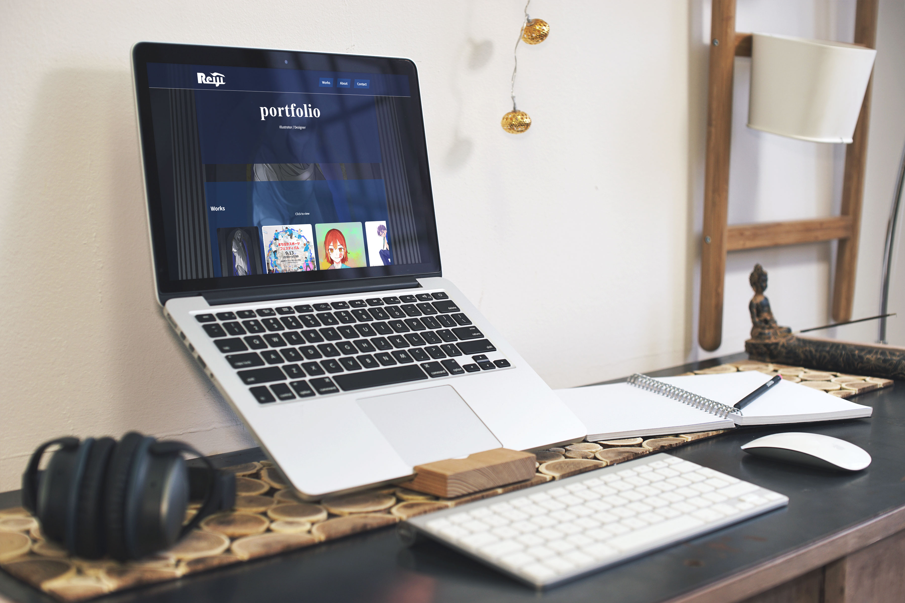
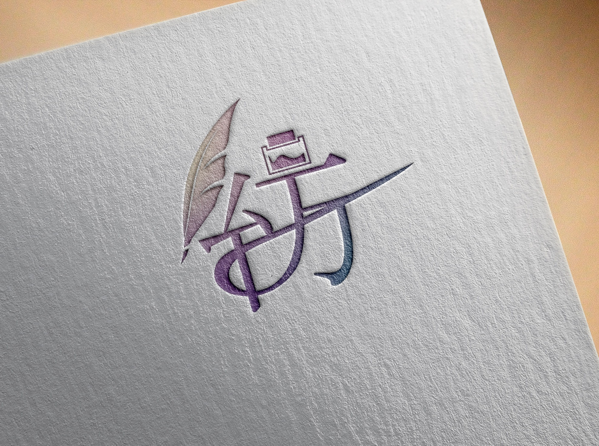

Illustrator / Designer
👆Click to view
Drag to show more ➤






Okada Reiji
岡田 怜士
2005年生まれ。静岡県在住。 静岡産業大学 経営学部 心理経営学科 在学。 もともと趣味でイラストを描いており、デザインに関わる仕事を志すようになりました。イラストの経験を生かした柔軟な素材制作を得意としています。 制作では、とりあえず手を動かしながら同時にインプットも行うスタイルで、試行錯誤しながら形にしていくことが多いです。 今回、初めてのWebデザインにも挑戦しており、新しい領域へのチャレンジによって、できることの幅が増えることが好きです。 今後はデジタルデザインにとどまらず、さまざまな表現領域へ広げていきたいと考えています。
Email: r2315045ei@gmail.com